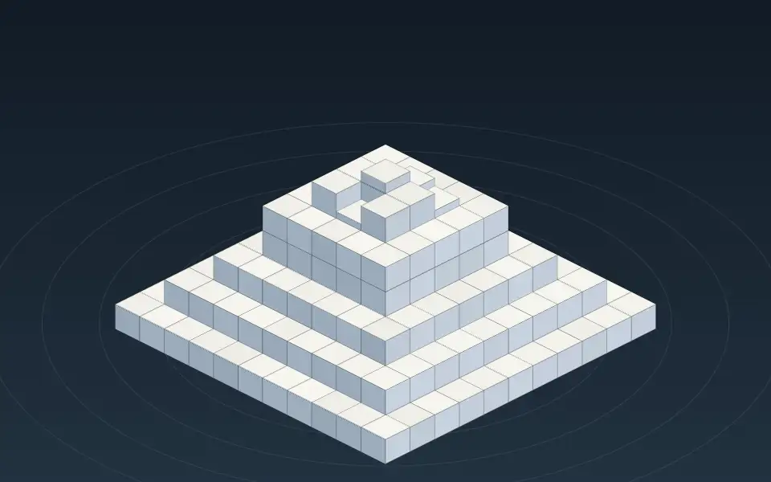

Saltmarsh coast · made-up, like the rest of this page
Salt, made by the tide.
Twice a day the sea walks up the marsh and fills our clay pans. Sun and wind do the rest. We only open a sluice and wait.
Seawater is about three and a half percent salt. Let the tide bring it in, hold it still in shallow clay, and give the water somewhere to go. What stays behind is a crust of small hollow pyramids, and that is all we sell.

Six tides to one crystal
Flood
On a spring tide we lift the sluice board. The pan takes a hand's depth of seawater and the board goes back down.
Wait
For six tides nobody touches it. The water thins, the brine thickens, and the first square flakes form on the surface.
Rake
Flakes grow from their edges, so each one builds into a hollow stepped pyramid. We rake them by hand before they sink.
A year on the marsh
- Mar
Mend the clay
Winter storms crack the pan walls. We puddle new clay with our feet, the way it was done here before pumps.
- May
First flood
The first spring tide with a warm week behind it. One pan only, to see how the brine behaves this year.
- Jul
The long days
Every pan is working. A full harvest takes about a week from flood to rake when the wind is from the land.
- Aug
Rake at dawn
Flakes are raked before the sun is high, while they still float. By noon the big ones have gone under.
- Oct
Last crust
Shorter days, slower pans. The last harvest is coarse and grey with clay, and goes to the smokehouse next door.
- Dec
Let the sea in
We pull every board and give the pans back to the tide until spring. The marsh birds take over.
Two tides a day, every day
Tidewater is not a real salt works.
It is a brief2motion example. The crystal is forty-eight pictures drawn by a script in this folder, played by your scroll position. Read how it was made.